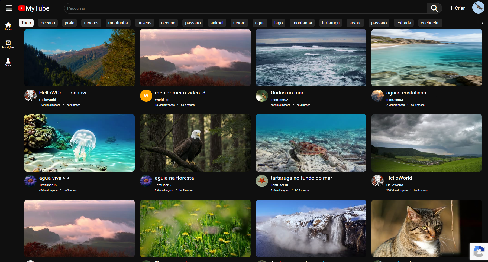
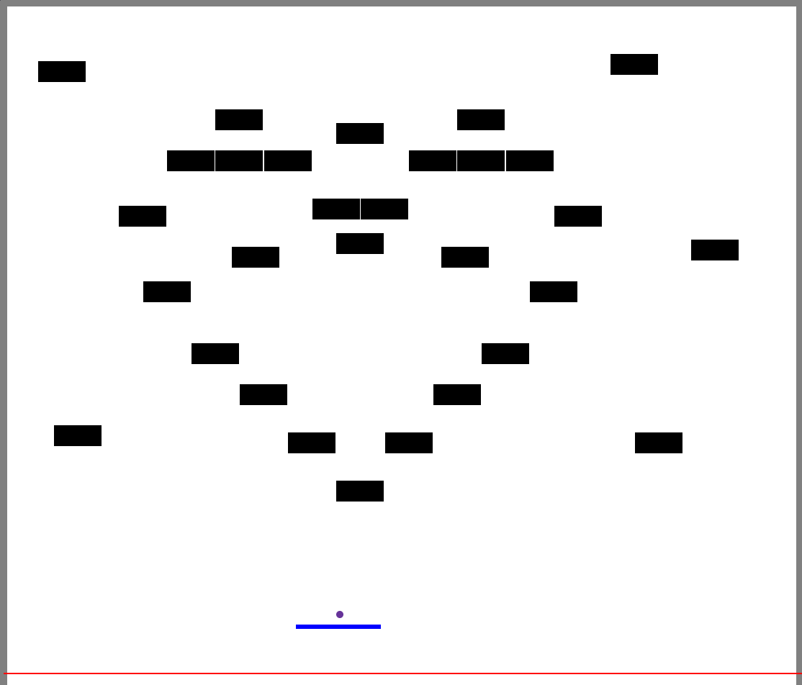

Ola, tenho 30 anos e minha jornada no aprendizado começou em cursos
de video aula por volta de 2020, iniciando pelo básico de HTML, CSS
e JavaScript.
Hoje, após 6 anos, meu maior projeto é feito em React e Node.js,
sendo minha especialização. Meu processo de aprendizado foi difícil,
mas tenho um bordão pessoal:
"Se consigo me imaginar fazendo algo, isso é possível de ser
feito."
Foi assim que cheguei até aqui e pretendo continuar aprendendo mais
ao longo da minha carreira.
Agora, falando um pouco sobre mim, sou determinado e, mesmo sabendo
que sou passível de cometer erros, irei aprender com eles e me
tornar um profissional ainda melhor. Sou novato no mercado de
trabalho, mas tenho certeza de que sou adaptável o suficiente para
me encaixar aos padrões da empresa.
Projetos
MyTube

Este é o meu maior projeto, um clone do YouTube feito em react para o frontEnd e node.js com express para o backend, utilizando recaptcha v3 do google. Este site é responsivo, permite criar contas que guardam informaçoes como inscriçoes, personalizaçao,videos do usuario, historico e videos curtidos. Já os videos que aparecem no feed sao buscados atravez de relevancia com as tags do usuario, ou tags padroes caso esteja deslogado. Os videos tambem tem informaçoes guardadas no banco de dados como likes, visualizaçoes, descriçao e comentarios que por sua vez tambem guardam informaçoes de like e comentarios. as contas tambem tem acesso a pagina de gerenciamento de canais quando estao logadas, onde pode verificar todos os videos e suas informaçoes, analizes graficas do ultimo video, comentarios de todos os videos, personalizaçao de canal e informaçoes. por ultimo gostaria de pedir para que deixe um feedback caso se sinta confortavel, e/ou encontre bugs no site. o botao fica no fim da barra lateral. obrigado.
Ping-pong

Este é um jogo de ping-pong feito em HTML,CSS e javaScript, o jogo move a bolinha em linha reta frame por frame infinitamente, sempre verificando se ela esta em contato com uma superficie, caso sim ela inverte seu angulo e continua a se mover. o jogo detecta superficie nos retangulos e paredes, e a barra movida pelo jogador que sempre segue o mouse e tem duas extremidades direita e esquerda, fazendo o angulo da bolinha ir preferencialmente para a direçao dessa extremidade. o jogo acaba quando a bolinha cruza a linha vermelha ou quando todos os blocos sumirem, sendo honesto so consegui vencer o jogo uma vez kkkk.
Certificados
Desenvolvimento Web Completo
Comprovação do certificado
Udemy: Desenvolvimento React do zero c/ hooks, router e API.
Comprovação do certificado
Programaçao em Python do basico ao avançado.
Comprovação do certificado